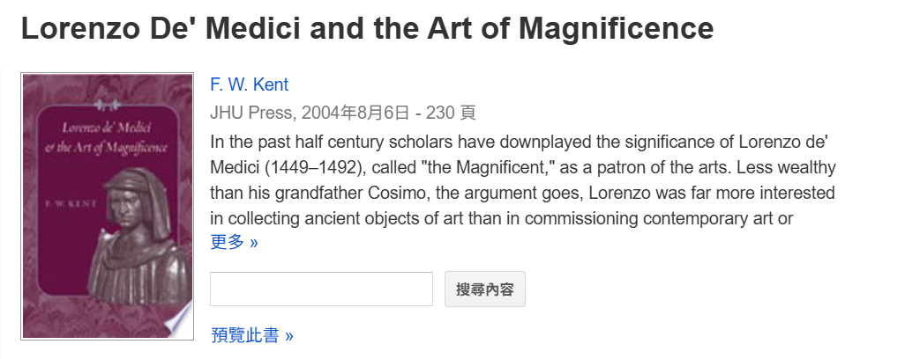
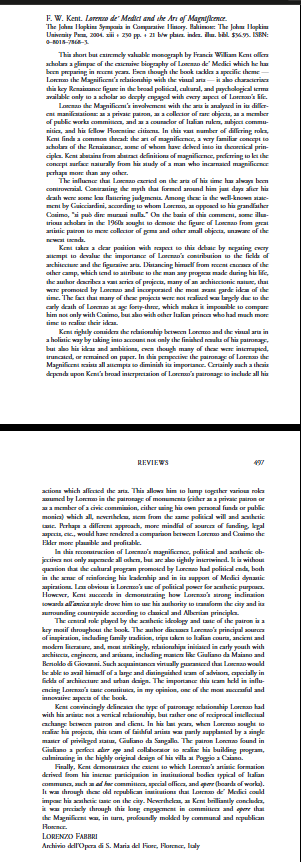

DAILY READING / 2026-10-21
羅倫佐的書信，應該怎麼讀才能證明藝術外交？ Isabella Lazzarini 出版 2026
分清原始書信、現代編輯及研究者推論，建立可以檢驗的外交解釋。
本篇 10 題選擇練習 ↗ 標記本篇已讀 ✓
以下保留 2026-10-21 精選筆記的研究論點與核讀範圍。「本次」指原精選當時的閱讀紀錄；外部全文與下載權限可能變動。出版年份與精選整理日期分開標示。
本文為 2026 年出版的研究，有可免費取得的正式版全文。
Isabella Lazzarini（2026）I primi due volumi delle Lettere di Lorenzo il Magnifico e la costruzione di un canone: il laboratorio dell’edizione attraverso il carteggio Fubini中文暫譯：〈《羅倫佐書信集》前兩卷與典範的建構：從 Fubini 通信看編輯工作的形成〉。
類型：義大利文學術期刊論文，刊於 Reti Medievali Rivista, 27(1), 321–345。2026 年出版；典藏另記錄於 2026 年 7 月 14 日上架，兩者已分開核對。RM Open Archive 來源 ↗
研究問題、材料與主要論點
作者追問：《羅倫佐書信集》如何從文獻整理，發展成重建十五世紀政治與外交關係的研究工具？
材料主要是比薩高等師範學校所藏 Fondo Fubini：編輯通信、工作資料，以及 Fubini 與 Rubinstein、Gilmore、Gilbert 對編輯原則的爭論。關鍵分歧在於：註解應只交代單封信的背景，還是應跨越佛羅倫斯，重建教廷、米蘭等地的往返信件與政治關係？作者強調後者的重要性，並指出羅倫佐的通信具有非正式政治領導者的特殊性。本次取得27頁正式PDF，核讀導論、第4節及第6節收束段落；未逐頁精讀全部正文與註釋。rmoa.unina.it 來源 ↗
和你的比較研究有什麼具體關聯？
以下是將本文方法運用到你研究上的建議，不是作者已經證成的美第奇贊助結論：
可支持：研究羅倫佐的文化政治時，把推薦、請託與贈禮書信放回往返溝通中，辨別誰提出需求、誰居中協調、誰作最後決定。
可修正：即使找到羅倫佐推薦畫家的信，也應再查教廷回覆、契約及付款資料，才能判斷推薦是否促成委託、影響程度多大。
可挑戰：比較老科西莫與羅倫佐時，須考慮材料差異。建築、圖像與書信留下的證據不同，不能直接把史料呈現方式的差別，當成兩人的政治策略差別。
史料、解釋與假說要分開
本文直接考證的是現代學者如何編輯書信；作者的解釋是，跨通信網絡的歷史註解會改變我們理解政治活動的方式。它沒有直接證明羅倫佐派遣西斯汀畫家，也沒有證明 magnificence 成功帶來政治認可；這些仍是你需要用十五世紀材料檢驗的命題。
可用於文獻回顧的轉述（2 句）
Lazzarini（2026）透過《羅倫佐書信集》前兩卷的編輯通信，說明歷史註解與跨地區通信對讀，如何參與塑造對羅倫佐政治活動的理解。其研究提示，使用書信討論文化贊助與外交時，應辨識原始文本、編者重建與研究者推論之間的層次。rmoa.unina.it 來源 ↗
APA 第 7 版草稿
Lazzarini, I. (2026). I primi due volumi delle Lettere di Lorenzo il Magnifico e la costruzione di un canone: Il laboratorio dell’edizione attraverso il carteggio Fubini. Reti Medievali Rivista, 27(1), 321–345. https://doi.org/10.6093/1593-2214/13611
連結與取得狀態
正式版 PDF：已直接開啟，免費、無須登入；27 頁檔案，含封面與附頁。 來源 ↗
RM Open Archive 書目與下載頁：免費公開，可核對作者、年份、卷期與頁碼。 來源 ↗
DOI：編號已由正式 PDF 核對；本次 DOI 導向頁未能開啟，閱讀請用上述典藏 PDF。RM Open Archive 來源 1 ↗ 來源 2 ↗
最值得先讀：第 4 節〈La vexata quaestio del commento storico〉。它最能幫你處理第三章的核心難題：如何從一封信走向有證據支持的外交解釋，同時保留其他參與者的作用。
讀完這一篇，試著選出有證據支持的回答。
開始本篇 10 題 Q&A → 以下保留 2026-10-21 精選筆記的研究論點與核讀範圍。「本次」指原精選當時的閱讀紀錄；外部全文與下載權限可能變動。出版年份與精選整理日期分開標示。
作者：Judith Bryce（2024）。
The Donati-Ardinghelli Wedding of 1465: A Closer Reading of Braccio Martelli’s Letter of April 27 to Lorenzo de’ Medici中文暫譯：〈1465年的多納蒂—阿爾丁蓋利婚禮：細讀布拉喬・馬爾泰利4月27日致羅倫佐・德・美第奇的書信〉。
類型：英文學術期刊論文，刊於 Renaissance Quarterly, 77(1), 26–58。出版年份為2024年；正式頁記錄線上發表日期為2024年4月24日。Renaissance Quarterly: Vol 77, No 1 來源 ↗
研究問題、材料與論點
作者細讀馬爾泰利致年輕羅倫佐的一封信，並對照其他通信、家族記錄及婚禮與表演文化研究，追問私人娛樂如何同時承載政治競爭與庇護關係。婚禮的新郎是遭放逐的反美第奇人士；他能否返城，與羅倫佐友人自由往返城內外的處境，形成鮮明差異。作者亦將寫信視為一項服務：馬爾泰利藉敘事、親密感與討好，維繫不對等的人際關係。既有精選記錄已取得33頁正式PDF，核讀導論、政治張力、庇護關係段落與結論。本次重開官方網頁全文並核對書目、導論與城外婚禮段落；未重新逐頁精讀全文。Renaissance Quarterly: Vol 77, No 1 來源 ↗
對你比較研究的具體用途
以下是運用本文提出的研究建議：
可支持：替「空間政治」加入具體比較項目——誰能進入、誰須取得許可、誰能替他人居中請託。你可分別檢驗 San Marco 的使用制度，以及羅倫佐人際網絡中的接近與排除。
可修正：第三章可建立1478年前的比較基準，檢驗帕齊陰謀後哪些仲介方式有所改變，避免把後來所有文化活動都視為危機後的新策略。
可挑戰：受邀、獲准進入或獲得推薦，各自代表多少政治接納？這些證據仍不足以直接證明統治正當性已被認可。
本文適合補強羅倫佐前期的政治網絡與空間分析；對西斯汀工程、宗教贊助及 magnificence，則只能提供比較方法。
史料、作者解釋與待驗假說
信件是歷史行動者對事件的敘述，不能直接當作現場的完整紀錄。作者對友誼與庇護關係的分析屬於研究解釋；部分人物辨識及婚姻是否服務於返城計畫，仍保留推測。Renaissance Quarterly: Vol 77, No 1 來源 ↗
你可進一步檢驗的假說是：美第奇的文化影響力，是否部分建立於安排他人接近人物、場所與資源的能力？這需要另查推薦信、許可文件、規約及實際結果，不能直接由本文推定。
可用於文獻回顧的轉述
Bryce（2024）透過1465年馬爾泰利致羅倫佐的書信，指出私人社交、文化表演與庇護關係之間的交織。其對城市邊界及放逐者移動限制的分析，提示空間政治亦可從進入資格與仲介關係考察，而不僅限於建築及圖像。Renaissance Quarterly: Vol 77, No 1 來源 ↗
APA第7版草稿
Bryce, J. (2024). The Donati-Ardinghelli wedding of 1465: A closer reading of Braccio Martelli’s letter of April 27 to Lorenzo de’ Medici. Renaissance Quarterly, 77(1), 26–58. https://doi.org/10.1017/rqx.2022.433
連結與取得狀態
正式書目與網頁全文：已讀取，免費公開全文，標示CC BY 4.0。 來源 ↗
正式版PDF：既有精選記錄已開啟33頁；本次網頁全文可讀，Cambridge PDF在網路檢索端可開啟，但本機下載回傳403，不能保證各環境均可下載。Renaissance Quarterly: Vol 77, No 1 來源 1 ↗ 來源 2 ↗
最值得先讀〈Political Tensions〉一節。它能幫你把「空間政治」轉成可查證的問題：誰可以進入、誰受到限制，以及誰有能力替別人取得許可。
Cambridge正式版PDF備援：開放取用正式版；本次檢索端可讀，本機下載受限。 來源 ↗
讀完這一篇，試著選出有證據支持的回答。
開始本篇 10 題 Q&A → DAILY READING / 2026-10-21
和解之後，衝突真的結束了嗎？ Isabella Lazzarini 出版 2024
對讀通信與條約，分辨關係改善、正式約定與實際作用。
本篇 10 題選擇練習 ↗ 標記本篇已讀 ✓
以下保留 2026-10-21 精選筆記的研究論點與核讀範圍。「本次」指原精選當時的閱讀紀錄；外部全文與下載權限可能變動。出版年份與精選整理日期分開標示。
Isabella Lazzarini（2024）
〈«Con l’uno pace, et con l’altro tregua, et con l’altro guerra»: dinamiche di conflitto e reti di accordi nell’Italia tardomedievale〉
中文暫譯：〈與一方和平、與另一方休戰、與第三方交戰：中世紀晚期義大利的衝突動態與協議網絡〉。
本文與作者2026年的書信編輯史文章為不同研究。類型為義大利文學術期刊論文，刊於 Edad Media. Revista de Historia, 25，123–155頁；期刊標示出版日期為 2024年7月1日。Edad Media. Revista de Historia 來源 ↗
研究問題、材料與主要論點
作者追問：義大利各政治勢力如何在交戰、休戰與談判並存的環境中處理衝突？
文章對讀外交通信、條約及歷史敘述，以十四世紀末的協議、1455年起的義大利同盟及其續約為案例。核心觀點是：和平協議不必然消除衝突，也可能重新分配衝突；書信中的交涉與具有法律效力的協議，應相互對讀。revistas.uva.es 來源 ↗
核讀範圍：沿用既有精選所記錄的摘要、導論及第2節相關段落閱讀範圍；未核讀完全部正文。本次另核對機構書目及第2.2節可擷取片段，未取得可穩定重開的完整PDF，不延伸概述其餘個案結論。
對你研究的具體用途
這篇不是直接研究藝術贊助，而是能補強第三章的外交背景與證據判準。以下是運用本文方法提出的建議，不是作者已證成的美第奇結論：
可支持：把1478年後的藝術交流放回持續交涉的關係網，而不是只用「敵對→和解→藝術外交成功」解釋。
可修正：即使藝術工程發生於和解之後，時間先後仍不足以證明羅倫佐促成委託。應另核對推薦信、教廷回覆、契約與付款。
可挑戰：比較老科西莫與羅倫佐時，不能把差異全部歸因於個人策略；也要檢驗兩人所處的政治關係與制度條件。
在「空間政治」上，你可以進一步追問：同一座西斯汀禮拜堂，對教廷、佛羅倫斯政治人物與受聘畫家，是否具有不同的政治用途？這是待驗證的研究問題，不是本文結論。
證據、解釋與假說
史料層：通信記錄交涉；條約記錄正式約定，兩者不能互相替代。
作者解釋：衝突與談判可以並存，不宜將和平理解為衝突的完全終止。revistas.uva.es 來源 ↗
你的待驗假說：藝術交流可能是維繫關係的手段之一，但其參與者、目的及效果仍須分別證明。
可用於文獻回顧的轉述
Lazzarini（2024）指出，中世紀晚期義大利的衝突與談判具有並存及反覆調整的特徵，和平協議並不等於敵對關係完全消失。她對外交通信與條約相互對讀的強調，提示研究者應區分交涉過程、正式約定及其實際作用。revistas.uva.es 來源 ↗
APA第7版草稿
Lazzarini, I. (2024). «Con l’uno pace, et con l’altro tregua, et con l’altro guerra»: Dinamiche di conflitto e reti di accordi nell’Italia tardomedievale. Edad Media. Revista de Historia, 25, 123–155. https://doi.org/10.24197/em.25.2024.123-155
連結與取得狀態
期刊正式書目與摘要：可公開閱讀；標示CC BY 4.0開放授權。Edad Media. Revista de Historia 來源 1 ↗ 來源 2 ↗
期刊PDF入口：既有精選記錄曾開啟33頁PDF，其後重取回傳403；目前下載穩定性未確認，並非付費全文的判定。revistas.uva.es 來源 ↗
DOI永久識別連結：已由期刊頁及PDF首頁核對。 來源 ↗
最值得先讀：第2.2節〈Carteggi e trattati: una contrapposizione?〉。它能幫你建立判準：外交關係的改善，與某件藝術委託確由羅倫佐促成，是兩個需要不同證據的命題。
瓦拉多利德大學典藏書目與全文入口：已核對公開書目。 來源 ↗
機構典藏PDF備援：已找到正式典藏連結；本次開啟逾時，完整下載狀態未確認。 來源 ↗
讀完這一篇，試著選出有證據支持的回答。
開始本篇 10 題 Q&A → DAILY READING / 2026-10-16
羅倫佐真的派遣畫家赴西斯汀禮拜堂嗎？ Michelle O’Malley 出版 2010
將教廷招募、畫家職涯與羅倫佐可能的仲介，放在一起檢驗。
本篇 10 題選擇練習 ↗ 標記本篇已讀 ✓
以下保留 2026-10-16 精選筆記的研究論點與核讀範圍。「本次」指原精選當時的閱讀紀錄；外部全文與下載權限可能變動。出版年份與精選整理日期分開標示。
羅倫佐真的派遣畫家赴西斯汀禮拜堂嗎
Michelle O’Malley，〈Finding Fame: Painting and the Making of Careers in Renaissance Italy〉（2010）
類型：同儕審查期刊論文
期刊：Renaissance Studies, 24(1), 9–32
DOI：10.1111/j.1477-4658.2009.00640.x 來源 ↗
年代說明：這是2010年的重要舊作；2023年的 Figshare 紀錄只是後來建立的機構書目頁，不能視為2023年新出版。
研究問題 材料與主要論點
O’Malley研究波提且利、吉蘭達約、佩魯吉諾與科西莫・羅塞利在1481年取得西斯汀禮拜堂工程以前，如何透過作品、委託人和跨城市人際網絡建立名聲。她不把畫家的成功單純歸因於天賦，而是追查哪些作品因其所有者、展示位置及觀看對象，成為吸引下一位委託人的職業跳板。
主要材料包括：
佛羅倫斯商業法院 Mercanzia 的委託與帳簿；
波提且利《剛毅》、吉蘭達約在 Ognissanti 的 Vespucci 委託等早期作品；
梵蒂岡圖書館的工程帳簿與吉蘭達約1475–1476年壁畫；
佩魯吉諾在聖伯多祿大殿教宗墓葬禮拜堂的早期工程；
西斯汀工程契約、畫家既有的羅馬關係及後續委託；
Lorenzo、Platina、Bartolomeo Scala、Giovannino de’ Dolci等人的人際與行政網絡。
文章最關鍵的結論是：現有證據不足以確定四位畫家究竟如何取得西斯汀委託。O’Malley認為，波提且利、吉蘭達約和佩魯吉諾在羅馬或佛羅倫斯均已有可促成推薦的關係；其中吉蘭達約與佩魯吉諾甚至早已獲得教廷工程。因此，教廷透過自己的工程管理人直接聘用畫家，是不能排除、而且相當有力的解釋。
對羅倫佐藝術外交說法的關鍵修正
傳統論述常依 Herbert Horne 的推測，認為羅倫佐在帕齊戰爭後的和解談判中，向西斯都四世提供佛羅倫斯畫家；後來研究又以羅倫佐日後推薦藝術家的行為作為旁證。
O’Malley提出三項反證或疑點：
三位畫家不一定需要羅倫佐推薦
吉蘭達約和佩魯吉諾在1481年前已進入羅馬市場；波提且利也可能經由作品、樞機或佛羅倫斯—羅馬網絡獲得辨識。教廷過去亦曾直接要求佛羅倫斯釋出藝術家。
科西莫羅塞利是檢驗羅倫佐說的重要反例
羅塞利的風格及主要委託群體與羅倫佐所追求的藝術卓越未必契合；西斯汀工程完成後，由羅倫佐明顯控制的 Palazzo Vecchio「百合廳」工程聘用了其他西斯汀畫家，卻沒有聘用羅塞利，甚至出現遞補空缺時也未找他。這削弱了「整支團隊均由羅倫佐提名」的說法。
教廷工程管理人可能才是實際招募者
西斯汀工程由佛羅倫斯木工兼教廷工程監督 Giovannino de’ Dolci 管理；他簽署畫家契約、評定工作價值並支付款項，也可能透過佛羅倫斯工匠網絡取得羅塞利等人的資訊。
與你的老科西莫與羅倫佐比較研究之關聯
可以支持
藝術品與藝術家的聲譽都具有空間性。老科西莫在 San Marco 將藏書、圖像和修院建築安置於特定進入制度中；羅倫佐時代的畫家則藉由佛羅倫斯公共工程、羅馬教廷空間與跨城市委託累積可移動的職業聲望。文化政治因此不只是「誰付錢」，也包括誰讓藝術家進入特定空間和觀看網絡。
必須修正
你的研究計畫不宜直接寫「羅倫佐派遣佛羅倫斯畫家赴羅馬」，較安全而準確的表述是：
帕齊戰爭後，佛羅倫斯畫家參與西斯汀禮拜堂工程，經常被解釋為羅倫佐與教廷和解下的藝術外交；然而，畫家的既有羅馬人脈與教廷自身招募機制，亦可能是取得委託的重要途徑。
可供檢驗的假說
即使羅倫佐不是最初招募者，他仍可能把畫家赴羅馬所產生的聲譽資本重新納入佛羅倫斯政治，例如返國後的百合廳委託。但這與「羅倫佐親自挑選並贈送畫家」是兩個不同命題，必須分別驗證。
史料 作者解釋與尚未證實之處
史料可以確認：1481年西斯汀工程確實聘用這批畫家；Giovannino de’ Dolci具有契約、估價和付款職權；其中部分畫家在此以前已參與教廷工程。
作者的解釋：作品所在地、既有客戶及社會網絡共同塑造藝術家的聲譽，教廷直接招募可能比「羅倫佐統一提名」更能解釋完整團隊。
尚未證實：沒有已知文件直接記錄羅倫佐選定全部畫家、將他們作為外交禮物提供給西斯都四世；作者也坦言部分人際傳遞路徑具有推測性。
可用於文獻回顧的轉述
O’Malley（2010）透過波提且利、吉蘭達約、佩魯吉諾與羅塞利的早期委託，指出藝術家的聲譽形成於作品品質、展示場所及委託人網絡的交互作用，而非僅由個人才能或單一權貴的支持所決定。她進一步質疑羅倫佐統一提名西斯汀畫家的傳統說法，認為部分畫家已有羅馬經歷，而教廷工程管理人也具備直接招募佛羅倫斯藝術家的管道。因而，1481年工程可被研究為帕齊戰爭後的藝術外交，但其委託形成仍應區分教廷需求、藝術家網絡與羅倫佐可能的政治仲介（O’Malley, 2010）。
APA 第7版草稿
O’Malley, M. (2010). Finding fame: Painting and the making of careers in Renaissance Italy. Renaissance Studies, 24(1), 9–32. https://doi.org/10.1111/j.1477-4658.2009.00640.x
取得狀態
Wiley／DOI正式文章頁：本次已核讀官方網頁正文；PDF下載權限可能依地區或機構訂閱而異。 來源 ↗
ResearchGate作者分享頁：頁面標示全文由作者上傳，且網頁可讀取全文；但本次測試直接PDF網址回傳失效，故標示為網頁全文可讀，PDF下載狀態未確認／可能需登入。 來源 ↗
Figshare機構書目紀錄：穩定書目與摘要，明確標示沒有全文；非PDF下載頁。 來源 ↗
Academia.edu作者頁：列有本文，可能需登入；直接下載狀態未確認。 來源 ↗
最值得先讀：優先讀文章最後的〈The Sistine Commission〉。這一節直接處理你研究中最需要謹慎的因果問題：它沒有否認藝術外交的可能性，卻清楚說明為何不能在缺乏直接文件時，把整支西斯汀畫家團隊預先歸功於羅倫佐。
讀完這一篇，試著選出有證據支持的回答。
開始本篇 10 題 Q&A → DAILY READING / 2026-10-15
以跨宮廷流通重新理解羅倫佐的外交贈禮 Leah R. Clark 出版 2019／2020
跟著清冊、器物名稱與使節路徑，分辨數量、分類與政治價值。
本篇 10 題選擇練習 ↗ 標記本篇已讀 ✓
以下保留 2026-10-15 精選筆記的研究論點與核讀範圍。「本次」指原精選當時的閱讀紀錄；外部全文與下載權限可能變動。出版年份與精選整理日期分開標示。
Leah R. Clark，〈The Peregrinations of Porcelain: The Collections of Duchess Eleonora d’Aragona of Ferrara〉（2020）
類型：同儕審查期刊論文
刊物：Journal of the History of Collections, 32(2), 275–288
出版時間：2019 年 2 月 19 日先行上線；2020 年 7 月正式編入卷期。這不是近期出版的新作，而是有合法作者接受稿可讀的重要補充。
研究問題 材料與主要論點
Clark 質疑一項常見說法：羅倫佐去世時所列的瓷器收藏，是十五世紀義大利乃至歐洲規模最大的收藏。她以摩德納國家檔案館所藏 Eleonora d’Aragona 的1493年財產清冊與帳簿為核心，並比較羅倫佐的1492年清冊、外交書信、贈禮記錄、宮廷陳列和同時代物質分類語彙。她發現 Eleonora 擁有逾170件瓷器，遠多於通常歸給羅倫佐的52件。
更重要的是，羅倫佐的1492年清冊僅存於1512年的抄本；過去被統計為「瓷器」的櫥櫃內容，其實混有藤製碗、陶瓶與陶壺。因此，數量比較本身建立在不穩定的物件名稱與後來轉錄之上。Clark 主張，瓷器的政治價值不只來自價格或數量，也來自長途移動、使節儀式、轉贈、展示，以及觀者對其來源和材質所形成的知識——或誤認。
與你的研究軸線的具體關聯
可支持之處
這篇文章支持把羅倫佐的 magnificence 理解成一種關係性的文化政治：珍稀物件經由使節抵達、被接收、重新裝飾並向訪客展示，才轉化成聲望。作者特別討論馬穆魯克蘇丹 Qaitbay 贈予羅倫佐的器物；同一批物件在不同書信中分別被稱為 alla moresca 器皿或瓷器，顯示外交贈禮的意義並非固定於物件本身。
可修正之處
它修正「梅迪奇收藏天然具有壓倒性優勢」的敘事：羅倫佐並非唯一或最大的奢侈品收藏者。
外交物件也未必是羅倫佐主動送出的禮物；Qaitbay案例首先顯示佛羅倫斯是跨地中海外交網絡中的接受者。
不能僅憑清冊中的地域或材質名稱判定產地、真偽或取得途徑，更不能把所有異國物件一概視為外交禮品。
老科西莫與羅倫佐的比較價值
可由此建立一個有用的空間政治對照：老科西莫在 San Marco 的贊助，主要透過修道院、圖書館及其受控開放性塑造相對固定的城市制度空間；羅倫佐時期的瓷器等外交物件，則藉由使節旅行、接見儀式、宮邸陳列與跨宮廷轉贈形成「移動中的政治空間」。不過，這只是可供檢驗的比較框架，仍須分別以 San Marco 的使用規範和羅倫佐的使節書信證實。
證據 解釋與研究假說
史料證據：1493年 Eleonora 清冊、羅倫佐清冊的1512年抄本、Qaitbay禮品的不同書信描述，以及宮廷展示記錄。
作者解釋：物件的移動路徑、外交儀式與再展示，共同生產其象徵價值。
可供檢驗的假說：帕齊陰謀後，羅倫佐或許利用接收、陳列和再語境化異國珍品來展示其跨地中海關係與統治能力；但本文本身沒有證明這是他的明確政策，也不能據此推定赴羅馬的佛羅倫斯畫家皆由羅倫佐作為「外交贈禮」派遣。
可用於文獻回顧的轉述
Clark（2020）指出，十五世紀義大利宮廷中的中國瓷器不宜只作為收藏數量或個人品味的指標；其政治與文化價值形成於跨亞洲、馬穆魯克世界與義大利宮廷的貿易、使節和贈禮網絡。她對羅倫佐清冊及 Qaitbay 禮品名稱的重新檢視，也顯示「梅迪奇收藏優勢」與物件產地分類均須接受檔案傳承和同時代認知差異的校正。由此看來，羅倫佐式 magnificence 可被理解為對物件移動、接待和展示的操演，而非單純以昂貴物件累積聲望（Clark, 2020）。
APA 7 參考格式草稿
Clark, L. R. (2020). The peregrinations of porcelain: The collections of Duchess Eleonora d’Aragona of Ferrara. Journal of the History of Collections, 32(2), 275–288. https://doi.org/10.1093/jhc/fhy063
連結與取得狀態
DOI／期刊正式書目頁——摘要及書目；出版社全文需訂閱或購買。 來源 ↗
Open University 作者接受稿 PDF——直接免費下載；已確認為23頁完整作者接受稿，不是出版社排版版。 來源 ↗
Oxford Research Archive 書目紀錄——機構典藏紀錄；部分瀏覽環境可能限制存取。 來源 ↗
最值得先讀：就讀這一篇；優先看〈The problem of language〉及外交贈禮相關段落。它最直接示範如何避免把清冊名稱、物件數量和「外交性」當成不證自明的事實，對你比較老科西莫的制度／空間贊助與羅倫佐的移動式文化政治特別有用。
讀完這一篇，試著選出有證據支持的回答。
開始本篇 10 題 Q&A → DAILY READING / 2026-10-14
誰創立了 San Marco 公共圖書館？ B. L. Ullman、P. A. Stadter 出版 1972
從遺囑、藏書移交與管理制度，理解受管理的學術准入。
本篇 10 題選擇練習 ↗ 標記本篇已讀 ✓
以下保留 2026-10-14 精選筆記的研究論點與核讀範圍。「本次」指原精選當時的閱讀紀錄；外部全文與下載權限可能變動。出版年份與精選整理日期分開標示。
誰創立了 San Marco 公共圖書館
Berthold L. Ullman、Philip A. Stadter，《The Public Library of Renaissance Florence: Niccolò Niccoli, Cosimo de’ Medici, and the Library of San Marco》
出版年份：1972
類型：學術專書／圖書館制度史、手稿目錄學
出版者：Editrice Antenore
系列：Medioevo e Umanesimo, 10
說明：這是重要舊作，不是近期出版或近期上架的新研究；本次選入是因為它仍是考證 San Marco 圖書館成立、藏書來源與早期目錄的基礎研究。WorldCat核對作者、出版社與年份均為1972年。
閱讀與核讀範圍
本次未取得並逐頁讀完368頁全書；以下內容依據數位目錄、完整目次、學術書評，以及Treccani和San Marco博物館資料交叉核對。凡涉及全書細部判斷，應在取得正式全文後再次查頁。
研究問題 材料與主要成果
本書處理的核心問題是：Niccolò Niccoli的私人藏書，如何透過遺囑、遺囑執行人、老科西莫與多明我會之間的安排，轉化為San Marco圖書館；其「公共性」究竟建立在什麼制度與藏書基礎上？
主要材料包括：
Niccoli於1430、1437年所立遺囑及相關移交文件；
1441年向San Marco修士移交藏書的文件；
老科西莫捐贈給San Marco的手稿清單；
約1499–1500年的San Marco圖書館目錄；
十六世紀圖書館清冊；
可與現存手稿、初期印刷本比對的書目、所有權及藏書標記。
學術書評指出，本書整理的1499–1500年目錄共收錄約1,235項，作者成功辨認其中694部現存手稿或初期印刷本；另附十六世紀清冊、藏書移交文件與老科西莫捐贈手稿清單。
本書最重要的歷史修正是：San Marco圖書館不能只寫成「老科西莫創立第一座公共圖書館」的個人功績故事。Niccoli已在遺囑中要求藏書用於「共同利益」，並指定包含老科西莫、Leonardo Bruni、Poggio Bracciolini等人的16名遺囑執行人；老科西莫則運用財力、債權關係及建築贊助，使這項構想最終落實於San Marco。
與你的研究的具體關聯
這部書可以支持你把San Marco圖書館的「公共性」操作化，而不只是當成讚美性形容詞：
法律與制度的公共性
Niccoli的遺囑使用了「為共同利益」及供有學問的市民使用的表述；藏書亦由遺囑執行人監督，並非老科西莫可以任意處分的純私人收藏。
空間與使用的公共性
圖書館設在修院內，並不表示所有佛羅倫斯居民都能無條件自由進出。「公共」較接近向特定世俗學者開放、但仍受修會與管理人控制的制度。這可與Terry‑Fritsch（2012）對進入路線、修院門禁及觀看經驗的分析配合。
對老科西莫形象的修正
老科西莫確實提供建築、處理Niccoli債務並增加藏書，但公共圖書館的構想並非完全由他創造。你的論文可將其寫成：老科西莫把既有的人文主義公益構想，轉化為一項可與梅迪奇家族名稱連結的城市文化制度。
與羅倫佐的比較
本書目次把1465–1493年另列為「贈與與購置」階段，而書評認為1464年老科西莫去世後，圖書館最興盛的創建期已告結束。因此不能因圖書館後來仍獲得藏書，就直接推定其發展皆由羅倫佐主導；應逐項辨認捐贈者、管理人與實際資金來源。
史料 作者解釋與研究假說
史料可見：Niccoli指定16名遺囑執行人；遺囑要求藏書服務共同利益；1441年發生正式移交；藏書帶有「出自Niccolò Niccoli遺產」等來源標記。
作者的歷史重建：老科西莫既延續、也改變了Niccoli原先的公共圖書館方案，將其安置於自己贊助重建的San Marco。
可供你檢驗的假說：圖書館讓老科西莫將私人財富、債權及人文網絡轉譯為城市公益和文化領導形象；但是否因此獲得更廣泛的政治認可，仍須配合頌詞、書信、使用者紀錄及反梅迪奇論述檢驗。
可用於文獻回顧的轉述
Ullman與Stadter（1972）透過Niccoli遺囑、1441年藏書移交文件及San Marco早期目錄，指出該圖書館源於人文學者、遺囑執行人、多明我會與老科西莫之間的制度協作，而非單一贊助者從無到有的創設。
老科西莫以支付債務、提供建築及補充藏書等方式，使Niccoli原先服務「共同利益」的構想得以實現；然而，此一公共性仍屬受管理的學術准入，不能直接等同現代向全民自由開放的公共圖書館。
因此，San Marco可被理解為私人財富、人文主義公益與修會空間相互交涉的制度，而梅迪奇的文化正當性則建立在對既有公益理想的承接、物質化與家族化之上（Ullman & Stadter, 1972）。
APA 第7版草稿
Ullman, B. L., & Stadter, P. A. (1972). The public library of Renaissance Florence: Niccolò Niccoli, Cosimo de’ Medici, and the library of San Marco. Editrice Antenore.
取得狀態
Fulcrum／ACLS電子書頁：電子書書目與目次；是否需機構訂閱、能否完整閱讀或下載，本次未能確認。 來源 ↗
Wellcome Collection書目：標示ACLS Humanities E-Book有全文，但免費直接取得狀態未確認，可能需要機構權限。 來源 ↗
Open Library完整書目：僅書目及館藏定位，沒有確認可借閱全文。 來源 ↗
WorldCat館藏紀錄：穩定書目／查詢館藏，非全文。 來源 ↗
Pierre Petitmengin完整書評：免費直接閱讀與下載，但只是1979年的四頁書評，不是原書全文。 來源 ↗
PMC書評PDF：可直接免費下載，但僅一頁書評。 來源 ↗
最值得先讀：若取得全書，先讀第一章「圖書館的成立（1436–1444）」及附錄二「Niccoli藏書移交文件」。這兩部分最能幫你把「老科西莫建立公共圖書館」改寫成有遺囑、管理權、資金與空間證據支持的歷史論述。
讀完這一篇，試著選出有證據支持的回答。
開始本篇 10 題 Q&A → 以下保留 2026-10-13 精選筆記的研究論點與核讀範圍。「本次」指原精選當時的閱讀紀錄；外部全文與下載權限可能變動。出版年份與精選整理日期分開標示。
F. W. Kent，《Lorenzo de’ Medici and the Art of Magnificence》
2004 年，學術專書，Johns Hopkins University Press。
這是較早但仍很關鍵的研究；本次未找到同等聚焦、且足以取代它的近期新作。出版社目前販售的是 2007 年平裝／電子版，但原版確為 2004 年，不能視為近期出版。
研究問題 材料與主要論點
Kent 要重新檢驗一項修正主義命題：與老科西莫相比，羅倫佐是否主要只是古物與珍玩收藏家，而非積極的藝術、建築贊助者？
從目錄、試閱及兩篇完整書評可確認，材料包括：
人文主義者與圭恰迪尼等人的同時代評述；
羅倫佐參與 opere、臨時委員會及城市工程機構的紀錄；
書信、收藏活動以及與建築師、工程師、工匠的關係；
Via Laura 一帶的城市更新計畫、Poggio a Caiano 等別墅與鄉間地產，以及未完成或僅停留在規畫階段的工程。
Kent 的核心論點不是把羅倫佐恢復成「一切文藝復興藝術背後的主使者」，而是擴大「贊助」的觀察範圍：除私人出資委託，還包括擔任公共工程委員、提供鑑定與仲介、向其他統治者推薦藝術家，以及藉政治權威影響城市建設。據此，羅倫佐的文化政治同時具有公民性、家族性與逐漸增強的君主性。
書評指出一項重要限制：Kent 把私人贊助、公共職務、公款工程及政治仲介都納入羅倫佐的「贊助」，容易模糊資金來源、法律權限與實際決策者；此外，本書並未充分界定同時代人所理解的 magnificence。
對你的比較研究的具體作用
支持：老科西莫與羅倫佐的差別不宜只用「完成了多少建築」衡量。羅倫佐透過共和機構、專家網絡與仲介活動影響城市，即使未必是單一出資人，仍可形成可辨識的空間政治。
修正：羅倫佐在佛羅倫斯城內仍受共和傳統約束；相較之下，Poggio a Caiano 等郊外空間更容許他呈現接近君主的形象。因此，「城市／鄉間」可能比「公共／私人」更能揭示其權力表述。
挑戰：若直接以 Kent 的廣義贊助概念比較兩代，可能高估羅倫佐的個人能動性。建議把每項工程分成「出資者、法定決策機構、仲介者、藝術家選擇、象徵受益者」五項，再與老科西莫對照。
對帕齊陰謀後藝術外交的界線：本書能提供羅倫佐作為鑑賞者、仲介者與外交參與者的制度背景，但目前取得的材料不足以把佛羅倫斯畫家赴羅馬直接歸因於他；西斯汀工程仍須另以教廷付款、藝術家契約、使節書信及佛羅倫斯政府文件逐案驗證。
可放入文獻回顧的轉述
Kent（2004）反對僅以私人出資或已完成建築衡量羅倫佐的藝術贊助，主張其文化權力也透過公共工程委員會、鑑賞仲介及與藝術家和技術專家的互動而運作。
不過，Kent 將公職活動、公款工程與私人贊助納入同一套 magnificence 敘事，使羅倫佐與老科西莫的比較仍須進一步區分資金來源、法律權限及實際決策者。
就空間政治而言，羅倫佐在共和城市內較受制度限制，而其郊外別墅與領地則更明顯展現王侯化傾向（Kent, 2004）。
APA 7 草稿
Kent, F. W. (2004). Lorenzo de’ Medici and the art of magnificence. Johns Hopkins University Press.
取得狀態
出版社書目與購買頁：付費；非免費全文。目前頁面列的是 2007 年平裝／電子版。 來源 ↗
Google Books：有限預覽；非完整全文，可查看目錄與部分頁面。 來源 ↗
WorldCat 書目：穩定書目／館藏查詢；非全文。 來源 ↗
Dennis Romano 的完整書評 PDF：直接免費下載，但只是三頁書評，不是本書全文。 來源 ↗
Lorenzo Fabbri 書評作者分享頁：頁面可讀；下載可能需登入。書評原刊於 2006 年，雖由作者在 2026 年上傳，不能算作 2026 年新出版。 來源 ↗
閱讀建議：先讀 Google Books 可見的導論與第三至第五章，再配合 Romano 的免費書評。它最值得優先閱讀之處，是能把「羅倫佐是否親自付錢」轉化為更精確的問題：他究竟透過哪些共和制度、專家網絡與空間層級，使審美判斷取得政治效力。
原精選附圖（2 張）＋ 
原精選所附書目與有限預覽畫面。 
原精選所附 Fabbri 書評圖；這是書評，不是 Kent 全書。 讀完這一篇，試著選出有證據支持的回答。
開始本篇 10 題 Q&A →